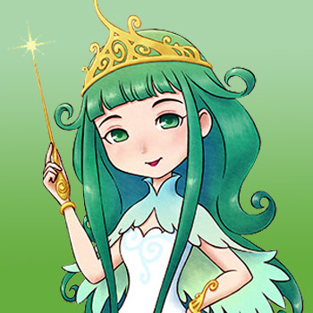

Diosa de la Cosecha



La encantadora diosa es un ser mágico que vive en el estanque en la base de la cascada junto a las aguas termales. Ella vigila a los aldeanos, pero ellos no pueden verla. Ella también te cuida y te felicitará cuando alcances hitos en tu juego, como alcanzar los 100.000 pasos en tu podómetro o llegar al piso inferior de una mina. Sólo tú puedes ver a la diosa. Lanzar un regalo a su estanque como ofrenda hará que ella aparezca, le agradezca por su regalo y luego desaparezca nuevamente. Ella también aparece en tu televisor durante la primera semana de cada año para jugar contigo un juego de altas y bajas.
| Cumpleaños | 8 de primavera (primaria) o 9 de primavera (alternativa) |
|---|
| Amistad extra | Consulte a continuación para obtener más detalles. |
|---|
| Rival | (Ninguno) |
|---|
| Horario | Vive en un estanque y no deambula en absoluto por la ciudad. El agua de su estanque no se congela durante el invierno, por lo que puedes arrojarle cosas durante todo el año. |
|---|
Preferencias de regalo
La mejor forma de mejorar la amistad y el afecto es siempre regalar las cosas que le gusta una vez por dia.
| Fasina |
(Ninguno) |
| Encanta |
|
| Gusta |
- Leche (normal, café, fruta y fresa) (C/T)
- Huevo (C/T)
- Judía azuki
- Flor mágica azul
- Castaña asada
- Col
- Zanahoria
- Castaña
- Chile
- Pepino
- Berenjena
- Pimiento verde
- Flor de luna
- Cebolla
- Flor dulce sol
- Patata
- Calabaza
- Flor mágica roja
- Espinacas
- Flor de juguete
- Tomate
- Nabo
- Boniato
- Arroz con castañas
- Palbochae
- Pizza margarita picante
- Dorayaki
- Pizza de verduras
- Filete de pimienta
- Salteado de verduras picantes
- Sándwich picante
- Torta de fresa
- Ramen picante
- Quiche
- Potaje de calabaza
- Oden
- Puré De Patatas
- Mont Blanc
- Huevos benedictos
- Hojas de té relajantes
- Filete de pimienta picante
- Flor de gato rosa
- Maíz
|
| Desagrado |
- Madera
- Todos los minerales y gemas.
- Hongo venenoso
- Articuos de mujer (carrera de caballo)
- Lata vacía
- Forraje
- Rama
- Hierba
- Bota de goma
- Fósil antiguo
- Huesos de pescado
- Alimento para pollos
- Carta en botella
- Piedra Tomatosetta
- Roca
- Piedra
- Pelota para mascotas
- Tesoro pirata
- Madera dorada
|
Requisitos de matrimonio
La Diosa no tiene eventos románticos que puedas desbloquear, pero sí tiene muchos requisitos matrimoniales. Hay un requisito que le impediría casarse con la Diosa si se selecciona incorrectamente. Mientras arrojas objetos a su estanque para aumentar sus Love Points, después de 20 regalos ella te preguntará si tienes el ojo puesto en alguien especial. En ese momento debes seleccionar la Diosa de la Cosecha. Si seleccionas a alguien más de la lista, nunca podrás casarte con la Diosa de la Cosecha.
Luego podrás seguir adelante con los requisitos restantes:
| Requisitos estándar |
- Al igual que los candidatos normales, la Diosa requiere una cama grande dentro de su casa de campo. Sin embargo, ella nunca usará esta cama, ya que no vivirá dentro de tu casa una vez casada.
- También necesitarás tener corazón rojo con ella. Puedes aumentar sus LP dándole regalos, pero hay LP adicionales que puedes ganar a medida que completas hitos en el juego.
|
| Quinto año |
- Debes estar en el año 5 o superior.
|
| Lista completa de artículos enviados |
- Debes enviar al menos 1 de cada artículo del juego que se pueda enviar a través del contenedor de envío de Zack en tu granja.
|
| Captura todos los peces |
- No es necesario pescar el tamaño más grande de cada pez, solo capturar todos los peces.
|
| Encuentra todos los artículos |
- Descubre y envia todos los elementos de las minas del lago y de la casda excluyendo las estatuas decorativas que consigue en la mina.
|
| Confiesa tu intención |
- Los lunes, miércoles o días de lluvia o nieve, Carter pasará tiempo en su confesionario dentro de la iglesia. Puedes optar por pedirle que te quite las herramientas malditas, confesar algo por lo que te sientes culpable o decirle que solo estás ahí para charlar.
- Para completar este requisito de matrimonio tendrás que confesarte con Carter. Esta elección le brindará tres placeres aleatorios por los que se espera que se sienta culpable. Una de esas opciones aleatorias es admitir que quieres convertirte en socio de la Diosa de la Cosecha. Selecciona esa opción y Carter te dará su opinión al respecto. Él te dirá que no va a suceder o te dará su bendición para tu noviazgo con la Diosa. Necesitarás esta bendición para tu matrimonio.
|
| Recoge los orbes de la diosa |
- En el juego hay 9 joyas escondidas en las rocas dentro de la mina de la cascada en pisos específicos. Cuando las descubras, las joyas aparecerán en el suelo y luego serán absorbidas por la mochila.
- Las Joyas de la Diosa aparecerán en los pisos 60, 102, 123, 152, 155, 171, 190, 202 y 222.
- El juego no realizará un seguimiento de en qué pisos encontraste una joya de la diosa. Toma nota de los pisos fuera del juego para no terminar olvidando de qué piso limpiaste una joya.
- Una vez que descubras la última, se fusionará inmediatamente con las otras joyas ya sea que esten en tu mochila o en tu casa y el objeto resultante será el Tesoro de la Diosa, un accesorio que puedes equipar para recargar tu resistencia mientras estás afuera.
|
| Proponer matrimonio |
- Una vez que hayas completado todos los criterios de matrimonio, puedes proponerle matrimonio arrojando una Pluma Azul a su estanque. Si ella acepta tu propuesta, 7 días después tendrás una ceremonia privada en la iglesia con los Duendes de la Naturaleza como invitados a la ceremonia. Si rechaza su propuesta, entonces los requisitos no se han cumplido.
|